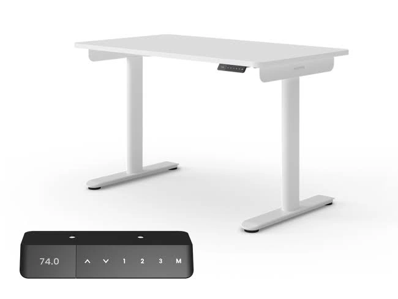

FW-C21 · 站着开会，桌面任务接着做
修订顺序：19 / 24 · P2 · 小额探索。顺序为策划测试安排，尚非素材效果排名。
产品：Economy Solid 白色 140×70 cm。
用户：制作场景假设（身份未验证）：经常视频会议的混合办公者。
需求：会议时可以换成站姿，电脑和资料不必另找地方。
卖点：电动坐站切换与140×70桌面。
机会类型：一：成熟创意的新表现。
参考什么：参考人物与办公任务的关联，再用局部控制器说明如何切换。
为什么：N1+N2支持混合办公和姿势交替；P2支持功能，不承诺会议效率提升。
如何差异化：只有一个人、一个屏幕、少量会议笔记；用侧面显示站姿而不是让人对镜头摆拍。
场景：带深红色书架的家庭书房，背景没有可识别品牌或公司信息。
构图：侧向35°中景，人物位于左侧、白桌延伸到右；电脑视频画面不显示真实姓名。
人物及动作：约35岁职员站姿听会议，单手在笔记本上记一句话，另一手自然放松。
渠道：Meta Feed；Google PMax 图片资产。比例：4:5、1.91:1。德语主题：Auch im Meeting die Position wechseln。
资格依据：一体桌板；单电机；两组记忆高度；白桌白架；对应140×70在售变体。
不能添加的宣称：页面文案提到100–160 cm，但当前可选变体只核验100/120/140 cm；不把160 cm写成可售Solid。
证据边界：有A类实际图片参考；具体原创场景和转化效果尚待测试。图片参考体现视觉方法，不构成竞品效果数据。需求证据：N1+N2+P2；姿势交替而非健康效果承诺。
参考原图
 YAAS-GOOG-016
YAAS-GOOG-016YAAS-GOOG-016 · Yaasa · Google · 完整导出广告画面
原广告来源。德国日期筛选列表已核验；单条首次/最后日期未读取。
 ERGO-GOOG-043
ERGO-GOOG-043ERGO-GOOG-043 · Ergotopia · Google · 完整导出广告画面
原广告来源。详情日期与德国地区已核验。

ERGO-GOOG-026ERGO-GOOG-026 · Ergotopia · Google · 真实广告内的图像组件（非完整广告版式）
原广告来源。详情日期与德国地区已核验。